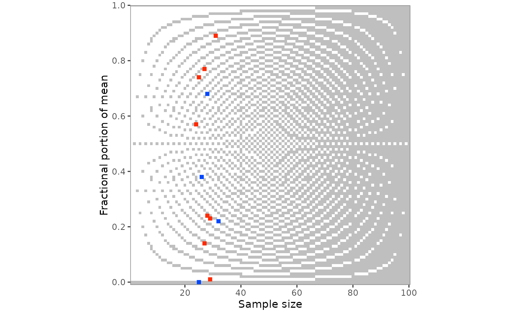
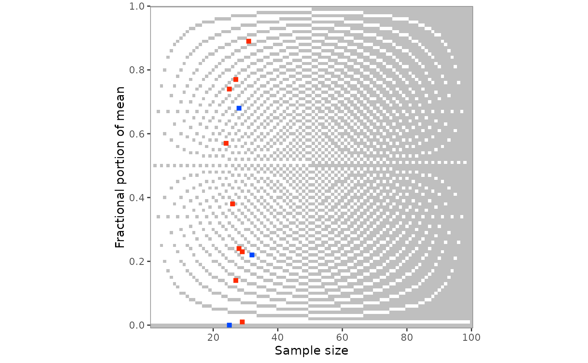
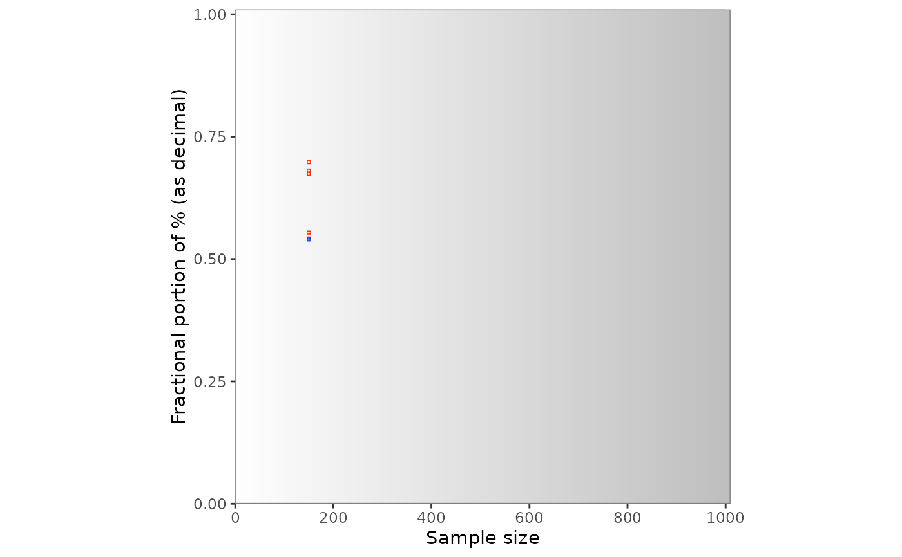
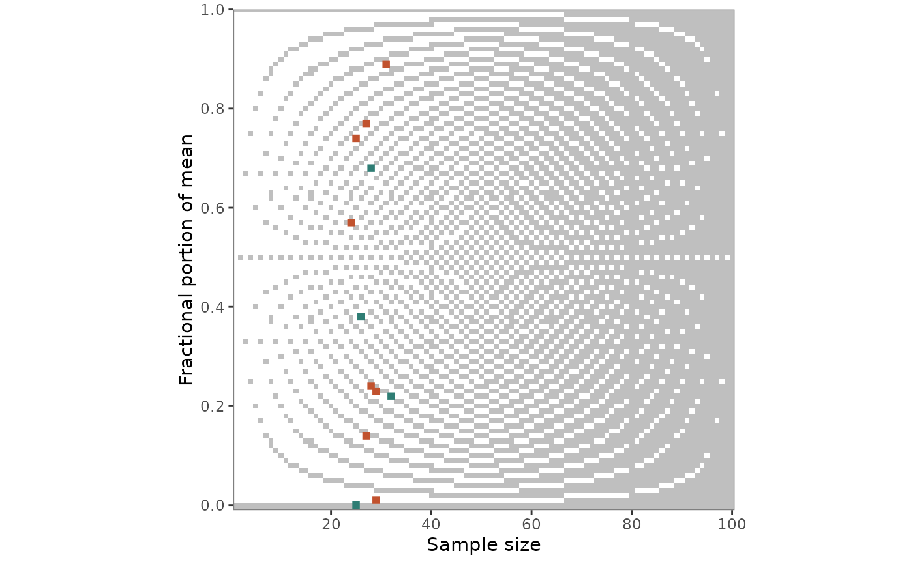

grim_plot_grid() plots the output of grim_map() or
grimmer_map(). Each value set is placed by n * items_averaged (the
sample size for single items) and the fractional part of its mean, in
blue if consistent and red if not, on a background raster that shows
which combinations are GRIM-consistent at all.
Usage
grim_plot_grid(
data = NULL,
show_data = TRUE,
show_raster = TRUE,
show_gradient = TRUE,
split_by_digits = FALSE,
n = NULL,
digits_x = NULL,
rounding = "up_or_down",
threshold = 5,
tile_size = 1.5,
color_raster = "grey75"
)Arguments
- data
Data frame returned by
grim_map()orgrimmer_map(), or by their*_seq()and*_total_n()variants.- show_data
Logical. If
FALSE, only the raster is drawn. Default isTRUE.- show_raster
Logical. Should the raster be drawn? Default is
TRUE.- show_gradient
Logical. With three or more decimal places, should a gradient be drawn? Default is
TRUE.- split_by_digits
Logical. If
TRUE, return a named list with one plot per number of decimal places instead of erroring when they differ. Cannot be combined withdigits_x. Default isFALSE.- n
Integer. Maximal value on the x-axis. Default is
NULL, in which case the axis spans the raster and the data.- digits_x
Integer. Number of decimal places for the raster. Default is
NULL, in which case it is read from thedigits_xcolumn that every mapper adds, or, if that was removed, inferred fromx, which loses trailing zeros. Withshow_data = FALSE,NULLmeans 2. For percentages, give the number of decimal places as reported; 2 are added.- rounding, threshold
The same as in
grim(), for the raster. Only used ifshow_dataisFALSE: otherwise, the raster follows the settings of the mapper call, and giving others is an error. Defaults are"up_or_down"and5.- tile_size
Numeric. Size of the tiles for value sets. Default is
1.5.- color_raster
String. Color of the consistent cells of the raster, and of the consistent end of the gradient that replaces it with three or more decimal places. Default is
"grey75".
Value
A ggplot object. With split_by_digits = TRUE, a named list of
ggplot objects, one per distinct non-zero number of decimal places (e.g.,
list(digits_1 = ..., digits_2 = ...)), returned invisibly after each
plot is printed.
Background raster
For one or two decimal places, the raster
shows every combination of sample size and fractional part that is
GRIM-consistent in grey and every inconsistent one in white. It depends
on the number of decimal places, which is read from the digits_x column
of data, and on the rounding method, which is read from the
grim_map() call. The white tiles are the cells of grim_grid() whose
consistency is FALSE. With three or more
decimal places, they would be too small, so a gradient shows the
probability of inconsistency instead.
A raster only applies to one number of decimal places, so grim_plot_grid()
errors if digits_x varies across rows. Use split_by_digits = TRUE to
get one plot per number of decimal places instead, or digits_x to choose
one.
With x_meaning = "percentage" in the grim_map() call, percentages are
plotted
as the proportions they were tested as, with two more decimal places.
Set show_data = FALSE to plot the raster alone, controlled by digits_x,
rounding, threshold, and n.
Under the default rounding = "up_or_down", fewer values are
inconsistent at sample sizes 40 and 80 than at their neighbors with two
decimal places (4 and 8 with one), and none at 80 (or 8), because many
achievable means there are ties, which the default accepts in both
directions.
Negative means
The y-axis is the fractional part of the absolute
value of x, so a mean of -2.51 is drawn at 0.51. GRIM's granularity
is symmetric around zero, so this is the value set's place on the grid.
A one-directional rounding method treats the absolute value of a negative
number the other way: "ceiling" like "floor", and "up" like "down"
(unless symmetric = TRUE). If all means are negative, the raster is the
one for this mirrored method, so that it agrees with the tiles. With
positive and negative means under such a method, no single raster does;
it is then the one for positive means, with a warning. The tile's color
comes from the consistency column and is unaffected.
References
Brown, N. J. L., & Heathers, J. A. J. (2017). The GRIM Test: A Simple Technique Detects Numerous Anomalies in the Reporting of Results in Psychology. Social Psychological and Personality Science, 8(4), 363–369. https://journals.sagepub.com/doi/10.1177/1948550616673876
Examples
# `grim_plot_grid()` reads the number of decimal places
# from the `digits_x` column:
pigs1 |>
grim_map(digits_x = 2, items_averaged = 1, data_type = "integer") |>
grim_plot_grid()

# The raster follows the rounding method of the `grim_map()` call:
pigs1 |>
grim_map(
digits_x = 2,
items_averaged = 1,
data_type = "integer",
rounding = "ceiling"
) |>
grim_plot_grid()

# Percentages are plotted as proportions:
pigs2 |>
grim_map(
digits_x = 1,
items_averaged = 1,
data_type = "integer",
x_meaning = "percentage"
) |>
grim_plot_grid()

# Other colors for the value sets:
pigs1 |>
grim_map(digits_x = 2, items_averaged = 1, data_type = "integer") |>
grim_plot_grid() +
ggplot2::scale_colour_manual(
values = c("TRUE" = "#2f7d74", "FALSE" = "#c1522e"),
aesthetics = c("colour", "fill"),
guide = "none"
)
#> Scale for colour is already present.
#> Adding another scale for colour, which will replace the existing scale.
